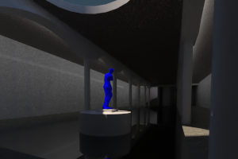
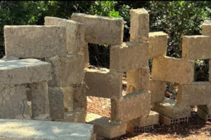
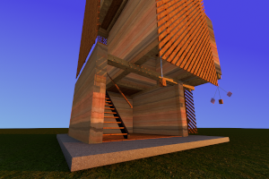
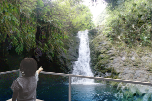
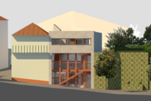
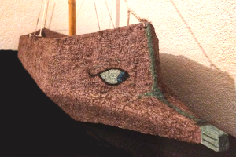

Underground art gallery beneath a proposed square, developed as part of a new urban infrastructure in Trancoso.
Free from economic constraints, the project sought to maximize the sensory and visual experience of its users, prioritizing spatial quality and artistic engagement. 2024
Group: André Andrade, Débora Barros, Roberto Pereira

Bench built with local natural materials using adobe and earthen plaster technique made in situ, hugging a beautiful tree ❤️.
Near building K4 in Technical University of Crete, Chaniá, Greece. Scanned with Polycam June 14 2025, circa 4 pm Greece time.
Group: André Andrade, Catarina Viegas, Sidar Timurturkan, Yaren Tanriverd

Base structure for an 4 stage tower made with natural materials, such as dirt, straw and wood, as an artistic meeting point inside of Trancoso's castle, Portugal. Part of Trancoso's call to Design. Late 2023.
Group: André Andrade, Débora Barros, Roberto Pereira.

Educational bridge connecting knowledge and people. Luiz Conceição challenge, 2022.

First attempt at rendering in my academic life. Lodging for 2 artists for them to create art in an 5m tall area. Late 2021 Featuring Bordalo ii's art in Fundão and Muye.

Maquettes of Ships made before entering University in a time i though Architecture would open doors to enter the ship drawing/construction industry...

{kind=link}
{kind=link}
{kind=link}
{kind=link}
{kind=link}
{kind=link}